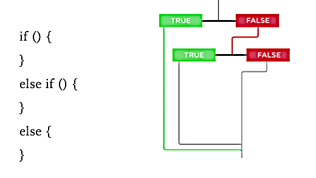

JavaScript conditional statements and loops
Introduction to JS Conditions and Loops Review Study Guide
Click here
Reading Assignment

Please read Chapter 4
Imagine . . .
1. What functionality would a web store need in order to display inventory that is in stock?
2. As you type a word into a search engine's search box, what makes the predictions appear below the characters you have typed?
Takeaway:
We need programs to take in and respond to user input.
What programs need
1. Ways to see if the program is working under certain conditions
2. Ways to make our programs responsive to the user

What Programs Need: Booleans
A boolean can only have two values:
TRUE or FALSE;
YES or NO.
Programs love booleans because:
- If a condition is TRUE, the program will execute a certain set of instructions.
- If a condition is FALSE, then the program will execute a different set of instructions.
More on Boolean as a logical data type
Conditional Statements
Conditionals allow you to use a user's input to change the results of a program or statement.
All conditions, no matter how complex, can and must be broken down to YES or NO, TRUE or FALSE.
Video Game Example:
- YES, TRUE: If your user destroys all 10 alien spaceships in your game, your program will allow them to move on to the next level.
- NO, FALSE: If your user destroys less than 10 alien spaceships in your game, your program will keep them on the current level.
Conditional Statements: More Examples
| Voting |
If a user is registered to vote, they can vote. |
|---|---|
| Weather | If it is pouring, I want to use an umbrella. |
| Court |
If a jury finds a person guilty, then certain rulings will apply. |
In pictures
See it in action here.
In pictures
The blue arrows in the picture illustrate "Control Flow", the conditional flow of program execution.
Based on user inputs to the program, different code will run.
The word "block" refers to code being called in response to the condition. "Code block" is synonymous with "block."
In this bin, identify the control flow and the code block.
In-Class Exercise
- Write an example on control flow in real life on the board or virtual chat.
- Write an example on control flow in a website that you regularly use on the board or virtual chat.
Conditional Statements
Dissect the phrase: "conditional statement"
A very simple conditional statement: (the one we will start with) is If something is true, then do this.
if ( the condition ) {
//the code that runs if the condition is true, called a code block
}
Note! There is no semi-colon at the end of the closing curly brace of the conditional statement.
Relational Operators
Relational operators compare its operands (values on either side of operator) and return a Boolean value.
| in | The in operator determines whether an object has a given property. |
|---|---|
| instanceof | The instanceof operator determines if an object is an instance of another object.
|
| < | Less than operator. |
| > | Greater than operator. |
| <= | Less than or equal operator. |
| >= | Greater than or equal operator. |
The if statement
Use if to tell JS which statements to execute, based on a condition.
var x = 5;
if (x > 0) {
console.log('x is a positive number!');
}
An 'if' statement tests a condition to see if it is true.
If condition is true, the code inside the 'if' statement is run.
Since the value of 'x' is 5, and 5 is greater than 0, the condition is evaluated as true and the code inside our 'if' statement is executed.
The if and else statements
in pictures

See it in action here.
In pictures
The picture helps us understand a more complex
Control Flow.
Instead of just testing if a condition is true, we have:
- a block of code to run if it is true and
- a block of code to run if it is NOT true
The "else" statement is a program option if the main condition tested is "false". The else statement is the "catch-all."
If and else statements: Example
Explore what the following code does.
var answer = prompt("What is your favorite number?");
if ( answer > 10 ) {
alert("You like large numbers!");
} else
{
alert("You like small numbers!");
}
//only one message will appear
See it in action here.
Another example
Explore what the following code does.
var answer = prompt("What programming language is the name of a gem?");
if ( answer === "Ruby" ) {
alert("Correct!");
}
//If you want an option for if the person gets it wrong
else {
alert("That’s not right!");
}
//only one message will appear
1. Enter "ruby" to see what alert appears. Why?
2. Enter "Ruby" to see what alert appears. Why?
See it in action here.
Why so many equal signs?
operand1 === operand2
Three equal signs is an equality operator that tests if two operands have the same value and data type.
If so, the operands are considered to be "strictly equal."
Only if the values and the data types are the same, then the condition is TRUE and the code inside the curly braces in the if block runs.
Exact equivalence example
Explore what the following code does.
var answer = prompt("What is the current month?");
if ( answer === "May" ) {
alert("This is such a great month!");
} else {
alert("This is an okay month.");
}
See it in action here.
Exercise
- Create a variable called favoriteFood and give it the value of prompt(“What is your favorite food?”).
- Create a conditional statement so that if the user answers your favorite food, they get an alert that says “Mine too!”. If they don’t, they get an alert that says “Ewwww”.
- Make sure that the user can enter their answer in any capital letters or non-capital letters.

More on operators
Use these operators to compare two values for equality, inequality, or difference. File available here.
var myAge = 28;
| Operator | Meaning | True expressions |
| == | Equality | myAge == 28 myAge == '28' 28 == '28'
|
| === | Strict equality | myAge === 28
|
| != | Inequality | myAge != 29
|
| !== | Strict inequality | myAge != '28' 28 != '28'
|
| > | Greater than | myAge > 25 '28' > 25
|
| >= | Greater than or equal | myAge >= 28 '28' >= 25
|
| < | Less than | myAge < 30 '28' < 30
|
| <= | Less than or equal | myAge <= 28 '28' <= 28
|
Common mistake: Do not confuse = (the assignment operator) with ==.
Exact equivalence
In an earlier JavaScript example, different alerts appeared for the user inputs of “ruby” and “Ruby”.
How do we eliminate the need for a capital case word?
A solution
if ( answer.toUpperCase() === "RUBY" ) {
alert("Correct!");
}
This will make the user's answer correct, no matter the case!
Exercise
Let's say you have a website that requires parental approval for the creation of user accounts.
A visitor who is under or equal to 18 years old will be denied access to your site.
How would you write that in JS?
Practice here.
Operators
Using numbers as the data type, think of some examples which will make the number comparison TRUE and FALSE.
| Operator |
|---|
| < |
| >= |
| <= |
| === |
| !== |
| True | False |
|---|---|
| 5 < 10 | 10 < 5 |
| 10 >= 9 | 9 >= 10 |
| 9 <= 9 | 10 <= 9 |
| 100 === 100 | 100 === 101 |
| 0 !== 1 | 0 !== 0 |
Remember
- Remember 100>100 is false, BUT 100>=100 is true.
- -12 < 0 is correct because negative numbers are less than zero.
- Numbers are always less than letters.
- What do you think happens if you say: “apple”<“bear”
- What about just two == ? (Just value, not type and value)
- !== means that two things are not equal in type or value; you can test for that too! (ex: 10 !==9 )
True or false
“javascript”===“JavaScript”
false
True or false
“3”===3
false
True or false
“lion” > “zebra”
false
True or false
“lion” !== “zebra”
true
True or false
1000 <= 1000
true
Can there be things besides true/false?
JavaScript has to be able to deal with values that are not exactly "true" or "false"
People call these Truthy and Falsey values
What will this evaluate to?
var a = 10;
if (a) {
alert("yaaaay!");
} else {
alert("boooo!");
}
Truthy and Falsey
"Falsey Values": these will evaluate to false if they are in the conditional statement
- 0
- -0
- NaN
- " "
- false
- null
- undefined
Truthy and Falsey
var a;
if (a) {
alert("yay!")
} else {
alert("boooo!")
}
Will the code block run?
If so, which code block will run?
Beyond if and else statements
What if we needed a third option, a Door #3?
Programming Multiple Outputs
Often times, we have more that one input or condition, and therefore, will need more outputs.
Example: If it is sunny and warm, you can go to the beach. But if it is warm and raining, you will probably stay in.
in pictures

See it in action here.
No limit to the number of else if statements that you can have in your code!
var isTeacher = prompt("Are you a teacher?");
var isStudent = prompt("Are you a student?");
var isAdministrator = prompt("Are you an administrative staff?")
if ( isTeacher.toUpperCase() === "YES" ) {
alert("Welcome Teacher");
}
else if (isStudent.toUpperCase() === "YES") {
alert("Welcome student");
}
else if (isAdministrator.toUpperCase() === "YES") {
alert("Welcome staff");
}
else {
alert("Who are you?");
}
Notice: Else statements are the catch-alls for the if and else if statements. Else statements appear at the end.
See it in action here.
Multiple Outputs
Let's look at each line of code and explain it.
var itemToBuy = " ";
var savings = 100;
if ( savings > 500 ) {
itemToBuy = "Computer";
} else if ( savings > 200 ) {
itemToBuy = "Phone";
} else if ( savings > 0 ) {
itemToBuy = "Dinner";
} else {
itemToBuy = "...still saving...";
}
What is the value of the variable itemsToBuy?
Exercise: Time Clock
- Create a variable called time and set it equal to the time that the user answers when you ask “What time is it?”
- Create an if statement so that if the time is less than 10, the user will be greeted with a “Good Morning!” **NOTE: We are using military time.
- If the time is less than 20, the user should be greeted by a “Good Afternoon!”.
- If the answer is anything else, the user should be greeted by a “Good Evening!”.
Explaining Code
It is really helpful to practice explaining code, especially code that you have not written.
If you can explain code, your ability to write code greatly increases!

Another exercise
Explain each line of code, what the line of code is doing.
var cupcakesSold = parseInt(prompt("How many cupcakes did you sell today?"));
var profitMargin = 30;
if (cupcakesSold < profitMargin ) {
alert("Gotta sell more!");
}
else if (cupcakesSold == profitMargin) {
alert("Broke even!");
}
else {
alert("We are doing well!!!");
}
Another exercise
Explain each line of code, what the line of code is doing.
var wholesalePrice = 5.45;
var retailPrice = 9.99;
var quantity = 47;
var salesTotal= retailPrice * quantity;
var profit= salesTotal-(wholesalePrice * quantity);
if (profit > 400 ) {
document.write("Time to go home");
}
else {
document.write("Keep working");
}
Logical Operators Intro
What if we only want to find all people who are over 65 AND retired?
What if we only want teens who like chocolate OR tweens who like strawberry?
What if we want French vanilla ice cream, NOT plain vanilla?
Logical Operators
Logical operators are often used with comparison operators:
var posNum = 4;
var negNum = -2;
| Operator | Meaning | True expressions |
| && | AND | posNum > 0 && negNum < 04 > 0 && -2 < 0
|
| || | OR | posNum > 0 || negNum > 0 4 > 0 || -2 > 0
|
| ! | NOT | !(posNum === negNum) !(posNum < 0)
|
When combining together multiple conditions, use parantheses to group:
var myAge = 28;
if ((myAge >= 0 && myAge < 3) || myAge > 90) {
console.log("You're not quite in your peak.");
}
And Operator
All conditions have to evaluate as true for the program to run.
Example: You need to be near a pool AND know how to swim in order to go swimming.
var nearPool = true;
var canSwim = true;
if ( nearPool === true && canSwim === true ) {
alert("Welcome!");
}
We use && in order to have both of the if conditions met. You put one condition on either side of the &&.
var age = 30;
var gender= "female";
if ( age > 18 && gender === "female" ) {
alert("Welcome!");
}
And Operator
Another example:
You can have more than one set of &&.
var age = 30;
var gender= "female";
var name = "Michelle";
if ( age > 18 && gender === "female" && name === "Michelle" ) {
alert("Welcome!");
}
Or operator
One of the conditional statements has to evaluate as true for the program to run.
Example: You need to be near a pool OR near the beach in order to go swimming.
var nearPool = true;
var nearBeach = false;
if ( nearPool === true || nearBeach === true ) {
alert("Welcome!");
}
We use || in order to have both of the conditions met. You put one condition on either side of the ||.
var agree = prompt("Do you agree?");
if ( agree === "Yes" || agree === "Y" ) {
alert("Welcome!");
}
What will appear in the browser's console?
var ships = 10;
var score = 0;
if ( ships === 0 || score === 0 ) {
console.log('Game over.');
} else {
console.log('Your score is zero.');
}
What will appear in the browser's console?
var x = 10;
var y = 20;
if ( x < 10 && y > 10 ) {
console.log('The condition passes.');
} else {
console.log('The condition fails.');
}
And/Or Operators: Make Up Your Own
Pair up to think of some real-world situations where you would need:
- both conditions to be true (&&)
- either condition to be true (||)
- three or more conditions to be true (&&)
- one of three conditions to be true (||)
Example: gym membership, hiking tour, boat ride, shipping costs, etc.
Now we will split into four groups. Group 1 will flesh out code for Q1; Group 2, Q2; Group 3, Q3; Group 4, Q4.
Can I go out?
var hoursOfWork = 2;
var today = 'Friday';
if ( hoursOfWork >= 10 && today === 'Friday' ) {
alert("Too much work! I can’t go out");
}
else if ( hoursOfWork >= 5 && today === 'Friday' ) {
alert("I will catch up with you when I can");
}
else if ( hoursOfWork === 2 && today === 'Friday' ) {
alert("It's Friday, let’s go!");
} else {
alert("This isn't Friday. I need to stay home.");
}
Which mode of transportation?
var milesLeft = 9;
var primetime = false;
if ( milesLeft >= 20 || primetime === false ) {
alert("Awesome. I can drive.");
}
else if ( milesLeft >= 10 && primetime === true ) {
alert("I better bike, scoot or take the bus.");
}
else if ( milesLeft >= 0 && primetime === true ) {
alert("Let's carpool or do a ride share!");
} else {
alert("I think I'm gonna stay home today.");
}
Review Exercise
- Create a variable named busRunning and ask the user if the bus is running today.
- Create a second variable named passengerNum and ask the user how many passengers are currently on the bus.
- Create a conditional statement that says if the bus is running AND the bus has less than or equal to 75 passengers, the program gives them an alert that says “You can take the bus!”
- Otherwise, the user should get an alert that says “You will have to wait.”
Review Exercise
Create a variable named userAge; set it equal to the answer your user types into a prompt when asked how old they are.
If the user is over 25 tell them that they can rent a car.
If not tell them that they cannot rent a car.
Loops!
Introduction to Loops
Loops are a set of actions (e.g., instructions/code) that repeat:
- for a designated number of times, OR
- until a certain condition is met
Situational Examples: 4 x 100-meter relay race, wash cycle for whites, bedtime routine, etc.
Introduction to Loops
You can use loops to:
- create a list of 100 random numbers,
- display 20 photos downloaded from a photo sharing website like Flickr,
- repeatedly display a prompt dialog until a visitor correctly enters an answer to a quiz question,
- create a playlist of songs from select genres,
- customize the formatting of a downloaded list of To Do items.
Can you think of a situation where you would use a loop?
Loops
There are many different ways to create loops in JavaScript (and other programming languages).
We will focus on “while” and “for” loops.
Review on Conditionals
A 'while' statement repeats a section of code as long as a condition is true.
What is a condition (aka true/false)?
What is a conditional statement (aka if/else)?
How does a basic conditional statement look like?
if ( condition ) {
//code that runs if condition is true
}
else {
//code that runs if condition is false
}
Inside the parentheses goes a condition. If the condition is true, then the code inside the code block runs.
Reviewing Conditionals
Conditional statement example:
if (name === "Jeremy") {
alert("Hey, I know you!");
else {
alert("Who are you?");
}
‘While’ loops are very similar!
While Loops Syntax
while (a condition) {
//code goes here that runs if and while it is true
}
A condition also goes inside this set of parentheses
However, instead of the code inside the block only running once when the condition is true, it runs over and over and over again as long as the condition is true.
No semicolon after the final brace since the code repeats.
While Loops Example
Let's take a look at this example:
let count = 0;
while (count < 10) {
document.writeln("looping away!");
count += 1;
}
- Open a new tab in your browser.
- Open the Console in Developer Tools.
- Copy the above code and paste into the Console.
- Notice what happens in your new tab.
Horse Race Example
We want the horses to go around the track 10 times and log it each time they pass the counter.
var counter = 0;
while (counter < 10) {
counter += 1;
document.write(counter);
}
We can easily make counter < 1000!
Loops
What’s the difference between a while loop and a conditional statement?
IF music plays, I will do a dance. AND
WHILE music is playing, I will continue dancing.

What's wrong with this loop?
var num = 0;
while (num > 20 ) {
alert(num);
num += 1;
}
This loop will never run!
0 will never be greater than 20.
While Loop Practice
In JS Bin, create a while loop that prints to the document 26 times.
- Create a variable named count.
- Use "count" to track the number of times the loop runs.
- Remember to use the document.write() method inside the loop.
Important Notes
You don't always need to use a counter or specify an exact number of times that a loop must run.
All you need is a condition that at some point evaluates to false, so the loop can end.
Important Note 1
The condition is evaluated BEFORE the loop.
So if the condition is NOT true at the beginning, the loop will never run.
var num = 0;
while (num > 20 ) {
alert(num);
num += 1;
}
Important Note 2
You always need a way to break OUT of the loop (aka, the condition needs to be false at some point).
Something has to change INSIDE of the loop to stop it from running. Otherwise, you will be stuck in an endless loop and your browser can crash.
var num = 0;
while (num === 0 ) {
alert(num);
}
While Loop Notes Summary
- While Loop Note 0: A counter may or may not need to be declared OUTSIDE of the loop for evaluation in a condition.
- While Loop Note 1: A condition is evaluated as TRUE for the loop to run.
- While Loop Note 2: The condition needs to turn FALSE somewhere INSIDE the loop for it to stop running.
While Loop Number Exercise 1
Use a while loop to add up the numbers 1 to 20.
Then log the total to the console.
While Loop Number Exercise 2
Use a while loop to print out the even numbers from 1 to 20.
Explain this code
var maxNumber = 10000;
var numberToGuess = getRandomNumber(maxNumber);
var ourGuess;
var attempts = 0;
function getRandomNumber(maxNumber) {
return Math.floor(Math.random() * maxNumber) + 1; }
while (ourGuess !== numberToGuess) {
ourGuess = getRandomNumber(maxNumber);
attempts += 1; }
document.write("<p>The random number was " + numberToGuess +
". It took the computer " + attempts + " tries to get it right.</p>");
Song Exercise
Hint: Be mindful of infinite loops, which crash browsers!
- Ask the user how many verses they want to hear.
- Write code that console logs the "Bottles of Sprite on the wall" song:
- How would you fix "1 bottles of Sprite"?
- How would you change "0" to "No more"?
10 bottles of Sprite on the wall,
10 bottles of Sprite!
Take one down and pass it around,
9 bottles of Sprite on the wall!
For loops
Your new best friend :)
Intro to for loops
- For loops are the most popular type of loop in JavaScript.
- For loops are frequently used for actions that need to run a particular number of times.
- For loops are also a common way to work with arrays, which are lists of data.
- For loops frequently look through all of the items in an array one at a time.
- Examples: arrays of images, tasks, links, items, etc.
How do for loops work?
for ([initialization]; [condition]; [incrementation]) {
//...do something...
}
DECLARATION and INITIALIZATION is checked before the loop runs.
The loop will only run if the CONDITION is evaluated to true.
The INCREMENTATION is what is done to the counter after each time the code block runs.
The code block (everything in the curly braces) is what runs each time the loop is activated (just like while loops!).
For loops
for (var i = 0; i <= 10; i++){
//....do something...
}
To simplify writing this code, we use a variable to represent counter each time we use a for loop. We just use the letter “i”!
The letter “i” is a name we tyically give to a variable that is a number type that varies.
Counting from 0 to 10
// start from 0
// check if our count is 10 yet
// if not count it (add one)
for (var i = 0; i <= 10 ; i++){
console.log(i);
}
Count from 10 to 0
for (var i = 10; i >= 0 ; i--){
console.log(i);
}
While Loop vs For loop
While Loops
var counter = 0;
while (counter < 10) {
document.write(counter);
counter += 1;
}
For loops
for (var counter = 0; counter < 10; counter +=1) {
document.write(counter);
}
Fewer lines of code!
Quick challenge
Create a for loop that logs the numbers 4 to 156 to the console.
To log a value to the console use the console.log( ) method.
Looping through an array
- You can use a loop to go through each item of an array.
- Remember: arrays use zero indexes to count each element that is stored inside of them.
var favoriteColors = ["red", "blue", "purple", "yellow"];
for (var i = 0; i < favoriteColors.length ; i++){
console.log("I really like the color: " + favoriteColors[i]);
}
var fruitSnacks = ["dried cranberries", "fresh blueberries", "apple crisps", "plantain chips"];
for (var i = 0; i < fruitSnacks.length ; i++){
console.log("I need to stock up on: " + fruitSnacks[i]);
}
The Recipe Card
Create an object to hold information on your favorite recipe.
Your object should have these properties:
- title (a string)
- servings (a number)
- ingredients (an array of strings)
On separate lines (one console.log statement for each), log the recipe information so it looks like:

Modulus Operator
An additional math operator in JavaScript called the modulus.
It is noted by the "%" sign, and helps us find the remainder.
The remainder is a term used in division. Example: 4 divided by 2 has a remainder of 0. 4 divided by 3 has a remainder of 1.
Modulus can help us find out what something is divisible by.
Examples of the use of modulus on the next slide.
Modulus Examples
10 % 2 === 0 //this is true
9 % 3 === 0 //this is true
10 % 3 === 1 //this is true
15 % 4 === 0 //this is false
Remember, the modulus tells us if there is a remainder after the number on the left has been divided into by the number on the right.
Modulus Exercise for Arrays and Loops
Find all of the even numbers from 0-100 and add them to an array called “even”.
Find all the numbers divisible by 8 in "even" and add it to a different array called “myEights”.
Arrays and Loops
- Create an array called favoriteFood and add 6 items to the array.
- Create a function called printFoods that passes the argument “lists” through it.
- Within the function, create a for loop that writes to the document “My number [ ] favorite food is [ ]” for each item in the array.
- Call the function with the favoriteFood array.
The Reading List
Create an array of objects, where each object describes a book and has 3 properties: title (a string), author (a string), alreadyRead (a boolean to note if you've read it yet).
Iterate through the array of books. For each book, log the book title and its author like so: "The Hobbit by J.R.R. Tolkien".
Now use an if/else statement to change the output depending on whether you've read it yet or not. If you've read it, log a string: 'You already read "The Hobbit" by J.R.R. Tolkien'; if not, log a string: 'You still need to read "The Lord of the Rings" by J.R.R. Tolkien.'
in pictures
This image visually depicts a for loop that has an if statement inside of its code block. When might we want to use that?
If/else statements in a for loop
Dinner Example: At 1 PM, a caregiver receives a text: "If I am not home by 7 PM, make dinner."
Is there a variable? What changes?
If we do have a variable, how do we declare and initialize it?
var time = 1;
How would we write the for loop?
for (var i = 1; i < 7; i++) {
if (i < 7) {
console.log("I'll be home to make dinner.")
} else {
console.log("Please make dinner.")
}
}
If/else statements in a for loop
Boat Example: A paddle boat can only carry 4 people. When a seat is taken, you want the number of available seats to show.
Is there a variable? What changes?
If we do have a variable, how do we declare and initialize it?
var seats = 4;
How would we write the for loop?
for (var i = 0; i < 4; i++) {
seats--;
if ( seats !== 0) {
console.log("This seat is taken. There are " + seats + " seats left.");
} else {
console.log("This seat is taken. There are no seats left.");
}
}
If/else statements in a for loop
Tree Example: Dwarf trees are 10 feet apart, including 10 feet from the walls. You must plant trees along one wall in 3 square-shaped yards: 40 x 40, 80 x 80, 90 x 90.
Is there a variable? If so, how do we declare and initialize it?
var yards = [40, 80, 90];
How do we plant the trees? How do we write the for loop?
function plantTrees(arr) {
for (var i = 0; i < arr.length; i++) {
if ( yards[i] > 0 ) {
var wallSpace = arr[i] - 10
var numTrees = wallSpace / 10
return numTrees + " trees planted.";
} else {
return 0 + " trees planted."
}
}
}
The Movie Database
Create an object to store the following information about your favorite movie: title (a string), duration (a number), and stars (an array of strings).
Create a function to print out the movie information like so: "Puff the Magic Dragon lasts for 30 minutes. Stars: Puff, Jackie, Living Sneezes."
Intro to For In Loops
- For in loops are another way to loop in JavaScript.
- For in loops are frequently used for actions that need to run a particular number of times.
- For loops are also a common way to work with objects, which has data made up of properties and methods.
- For in loops frequently look through an object's keys to get its values.
Examples:
- Recipe: recipeName, numServings, chefContributor, etc.
- Book: bookTitle, author, illustrator, numPages, etc.
- Vacation: startDate, endDate, departingFlight, returnFlight, carRental, roomRental, etc.
How do for in loops work?
for (var [property] in [object]) {
//...do something...
}
For in loops loop through an object's properties/keys.
PROPERTY is often "key" because we want the for in loop to loop through the object's keys.
The OBJECT is the name of the object that we want to loop through.
Note the built-in stopping point for the for in loop: it will stop when there are no more keys in that object to loop through.
The code block (everything in the curly braces) is what runs each time the loop is activated (just like for loops!).
Objects Review
- An object in JavaScript is a self-contained set of related values and functions.
- It is a great way to keep data and functions about one item (or object) together.
- An object literal is an object that is created directly in the language by wrapping all of its properties and methods in curly braces. (It’s the one we learned. The other type of object is object constructor— don’t worry about that now!)
- Objects contain key/value pairs.
Objects Syntax Review
- How do you declare an object?
- How do you initialize an object?
- What does an object often have?
- Give three properties (key/value pairs) to this object using dot notation or bracket notation.
- Unscramble the word: We just created an object trailer.
//Type your answer here
Example of Object Literal
var superman = {
name: "Superman",
fakeName: "Clark Kent",
height: 6.4,
weight: 215,
hero: true,
allies: ["Superwoman", "Batman", "Wolverine"],
fly: function() {
return "Up, up, and away!";
}
}
Adding Items to Objects
var coach = {
favFood: ["cords","sticks", "penguins"],
owner: {name:"Jessica", age: 32, city: "SF"}
};
coach.favFood.push("chicken");
console.log(coach.favFood);
coach.owner.hairColor = "bronze";
function hair() {
console.log(coach.owner.hairColor);
}
hair();
For in loops with objects
We can loop through all of an object’s keys and values by using a for in loop, which is specific to objects.
We can create a variable “key” that is used to represent the name of each key in the superman object in the for in loop.
for (var key in superman) {
console.log(key + “: ” + superman[key]);
}
This will log to the console all of the data in our superman object.
Object Iterating Exercise
Given an object:
var class = {
lovely: "orange",
hptrust: "red",
drjules: "purple",
sparkle: "yellow",
infinite: "blue",
missmorpheus: "silver",
ubuspeaks: "green",
taiyz: "pink"
}
Find all of the pink values and return an array of the names with pink value.
If/else statements in a for in loop
A summit CFO needs attendees' tech preferences to inform financing of a web-only plan or a phone-or-web flex plan. If over 80% of the attendees have web OR phone-or-web preferences, you will invest in the web-only plan.
var summit = {
abbi: "phone",
belle: "web",
cadence: "phone or web",
devon: "phone",
elmo: "phone",
fey: "web",
gerardo: "phone or web",
helena: "phone or web",
ian: "web",
jacques: "web",
koriko: "phone or web",
leslie: "web",
millie: "phone or web",
nigel: "web"
}
Find all web values AND phone-or-web values; store their users in an array. Count the number of times your for in loop executes. Divide the length of the array with the loop count to get percentage. If percentage is 80%+, tell CFO to invest in the web-only plan.
If/else statements in a for in loop
Your herbal treatment plan has 1 bottle and 1 loose leaf tea:
var remedy = {
tincture: {
sizeFlOz: 1.5,
herbs: ["mimosa", "ashwagandha", "cinnamon"],
dosageDrops: 30,
dosageFrequency: 3
},
tea: {
sizeGrams: 2,
herbs: ["alfalfa", "nettles"],
dosageCups: 1,
dosageFrequency: 1
}
}
You prefer doses of tincture at mealtimes and tea at lunchtime. Write a for in loop with if/else statements that alerts you to take your remedies.
If/else statements in a for in loop
Example: A teacher purchases a hook and a basket for a student's things.
var newStudent = {
name: "Angelique",
backpack: { color: "purple", design: "unicorn" },
doubleHook: "vertical",
basket: [ "books", "homework", "miscellaneous"],
};
How would the teacher create printed labels for each key?
for (var key in newStudent) {
if ( key === "name" || key === "doubleHook") {
console.log(key + ": " + newStudent[key])
} else if ( key === "backpack") {
console.log(key + ": " + newStudent[key].color + newStudent[key].design)
} else {
console.log(key + " for books, homework, miscellaneous items")
}
}
Introduction to JS Conditions and Loops Roundup
Click here
The End
Thanks for your attention. :)